Debugging
If something goes wrong in your code, you get into debugger. For example, enter
g in REPL:
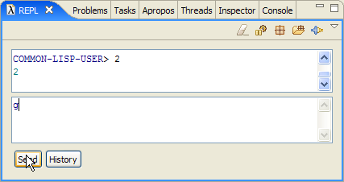
Hitting Send, opens debugger:
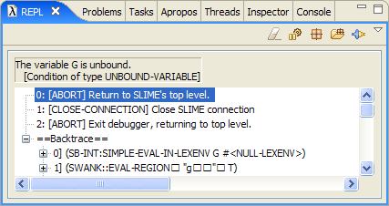
The debugger has three regions:
At the top is the error message that describes why Lisp stopped the program
Then debugger displays options to resolve the problem.
The default option which aborts previous command is highlighted so if you
satisfied with this default you can just hit Enter to go back to REPL
(or press q). To choose any other option you can select it and hit
Enter or press number that corresponds to the option.
Backtrace shows what evaluations Lisp performed before it arrived
to this error condition.
In this case the error happened because symbol g is not defined.
Advanced Debugger Features
This section is an edited version (to adapt it to Cusp features) of a
message by
Helmut Eller from slime development mailing list.
When Lisp enters debugging state it shows backtraces with frames.
A frame (sometimes called stack-frame, or activation record) contains
the information--return address, values of variables etc.--that the Lisp
system stores on the stack before a function call, i.e. the information
that is needed after the call returns. In the debugger, there's one
frame for each active call. The "backtrace" or "stacktrace" is the list
of frames. Debuggers for languages like C/Java/Python also have frames;
it's not a Lisp specific concept.
While the backtrace only contains the information needed to continue
after a call, it's often convenient to think of it as a snapshot of the
stack before the call. That's what makes backtraces so useful for
debugging.
Let's consider trivial example. Create new project and define the following
functions in your main.lisp file:
(defun g (x)
(z x))
(defun z (x)
(y x))
Now type (g 3) in REPL and call evaluate. Lisp brings up debugger:
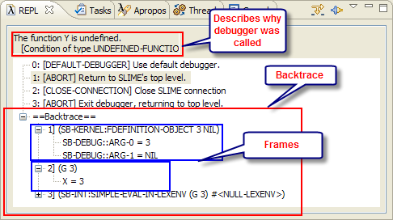
You can also inspect variables in frames - select variable that you are interested
in and press 'Enter' key or double click on the variable:
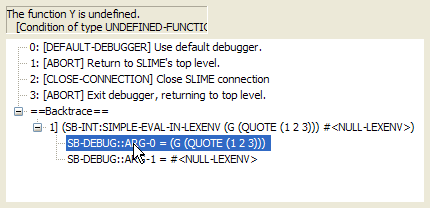
this brings up inspector:
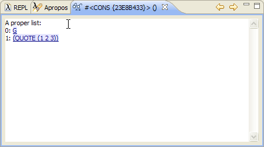
There are a few different ways stop execution:
- 1. Insert a (break) call at the place where you want to stop.
BREAK just invokes the debugger. (Of course, just inserting the text
"(break)" isn't enough, you also must recompile the function, however
this is done by Cusp automatically once you save the file.)
Cusp also provides a tool to manage break statements. If you select
complete s-expression (select using 'Expand Selection' command: Alt+Enter)
and use 'Toggle Breakpoint' command from Lisp menu
(Alt+B) Cusp will surround the s-expression into break macro and will
put a breakpoint annotation marker:
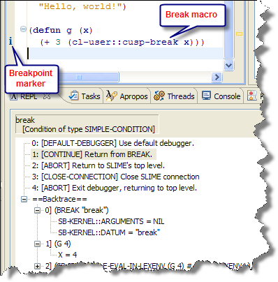
To remove break statement, select whole break expression (using Alt+Enter)
and use 'Toggle Breakpoint' command (Alt+B) to remove break macro.
-
2. If you want to debug an endless loop or some lengthy computation you
can press 'Interrupt execution' button (unfortunately this doesn't work
on windows with current version of SBCL, since at the moment SBCL doesn't
have threads on win32):
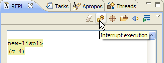
-
3. Just run your program and wait until it signals an error. If the
error isn't handled by your program the Lisp system will invoke the
debugger instead.
If the execution was stopped using BREAK you can step through the code.
With SBCL you can step "sexp-by-sexp". To try this feature first define the
following function:
(defun gg (x)
(progn
(format t "1 ~a~%" (elt (cl-user::cusp-break x) 1))
(format t "2 ~a~%" (elt x 2))
))
Evaluation of (g '(1 2 3)) brings up the debugger:
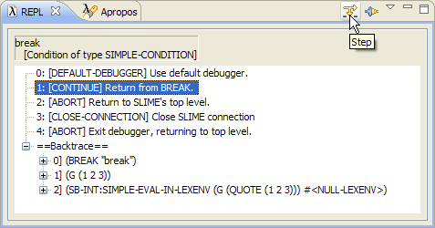
We press 'Step' button to step through the code (notice that once you start
stepping you can select if you want to step 'into' or 'over' by controls
in list of restarts):
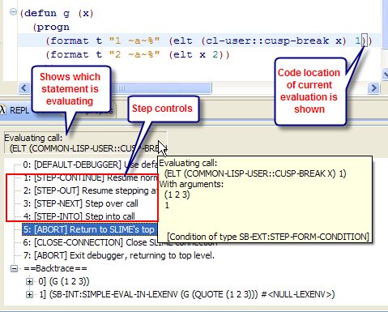
Inspector
Some regions of upper part of REPL are hyperlinks. These are objects that can be
inspected. To inspect you just click on a hyperlink. For example, enter
*package* in REPL:
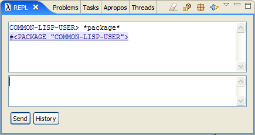
and follow #<PACKAGE "COMMON-LISP-USER"> hyperlink. You'll get
into Inspector:
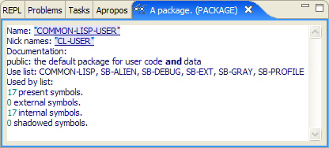
which prints details of the object #<PACKAGE "COMMON-LISP-USER">.
Compilation Warnings and Errors
Add to main.lisp following code:
(defun h()
"Call function that is not defined"
(hh))
When you save the file, Cusp tries to send it for compilation.
In this case saving generates item in Problems list:
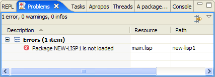
It is generated because we tried to compile main.lisp before we
loaded package new-lisp1.asd. See section "Quitting And Starting Again".
Now, if you load new-lisp1.asd compilation produces a warning,
which is added to Problems tab and put on bar left to the code:
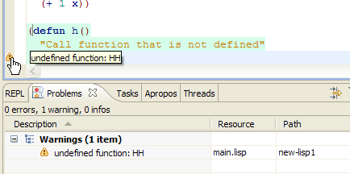
Watch (trace)
If you want to quickly trace a value in your functions you can use simple
trace macro that Cusp provides. The convenience of the macro is that it is
very easy to add/remove and it is tracked by markers. To trace an expression first
select it (use Alt+Enter) and then press Alt+T to add the macro. Removing is as
easy: select whole macro expression and press Alt+T:
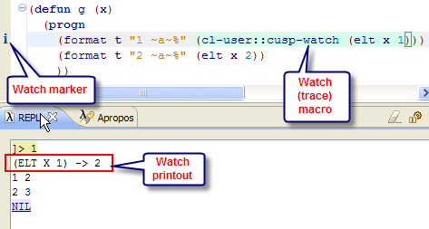
Back to table of contents